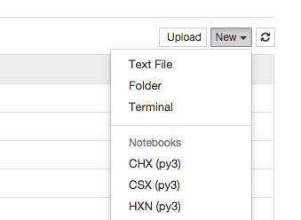
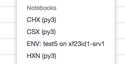

Software Deployment with Conda¶
Intro¶
See the conda documentation.
Conda is designed to let users install and use packages without administrative privileges, but it can also be deployed in a more controlled way. This is how we deploy it on the controls network at NSLS-II. After reading the summary below, you will be able to follow this bash script which shows exactly how we deploy and configure conda.
Internal Anaconda Server¶
We run an internal anaconda server at https://conda.nsls2.bnl.gov. The name
of the host running that server is alexandria.
Channels¶
A channel is a hosted collection of conda packages.
The anaconda channel contains the “official” packages distributed by
Continuum Analytics, including widely-used packages like numpy. When
Continuum releases new version of packages, we can vet them before we make
them available to users on this channel. The defaults channel is not
vetted by us; it should never be used internally.
The latest channel is where we put the latest tagged stable versions of
every package not officially distributed by Continuum. This includes in-house
packages like ophyd and bluesky and other dependencies that don’t happen to be
packaged by Continuum yet.
Each beamline has its own channel, e.g. CHX or XPD. These are not
actively used, but in the future they might be used to individually control
which beamlines can and cannot access certain packages.
Environments¶
Activating the root environments¶
Every beamline workstation has at least two conda environments that are
“locked down”, requiring root privileges to change. They are named
analysis and collection. The exact contents of these environments will
vary from beamline to beamline based on their software needs, but the names
are consistent so that at any beamline, this should work:
source activate collection
The above command assumes that (1) /opt/conda/bin/ is on the PATH and
(2) conda is configured correctly such that /opt/conda_envs/ is on the
search path for conda environments. Here’s how to troubleshoot if that is
not the case.
source /opt/conda/bin/activate /opt/conda_envs/collection
You can inspect the packages installed in the current environment using the command
conda list
Modifying the root environments¶
For example, to update to a new version of bluesky in the collection environment, do this as root:
conda update -p /opt/conda_envs/collection bluesky
To downgrade, install a specific version.
conda install -p /opt/conda_envs/collection bluesky==v0.3.0
Packages are inconsistent about whether they use a ‘v’ in their version string so be advised that they may or may not be required.
There are couple of handy options to know about. Sometimes conda will overeagerly
update dependencies that we don’t need to or want to update. To suppress this,
use the --no-deps option.
Creating customizable user environments¶
In addition to the standardized root-controlled environments, users can create their own. For example:
conda create -n my_analysis xpd_configuration
The above creates a new environment called my_analysis. It will not
be stored in /opt/conda_envs; as a non-root user I cannot write to that
directory. Instead, it will be written to ~/conda_envs.
In that environment, conda installs some packages. The first one, analysis
is a “metapackage”, a convenient way to install many packages at once.
The second one, xpd_configuration is a special package that creates
configuration files in ~/conda_envs/my_analysis/etc/ that will be used by
metadatastore and filestore.
From here, users can add or remove packages at will using conda and pip.
Access custom user environments in NSLS-II’s JupyterHub¶
The NSLS-II JupyterHub provides easy-to-use access to different host machines
and conda environments. For example, choosing CHX from the drop-down menu
connects to the CHX beamline’s analysis server (xf11id-srv1),
activates the /opt/conda_envs/analysis conda environment, and starts
a Python process in that environment.

Jupyter calls the entries in this menu “kernels.” You can read the gory
details in the IPython documentation.
Users can also connect to their own user-created conda environments through
JupyterHub. We provide a utility called kernelize to streamline the
process.
Log in to the host where the conda environment should be run. This is how JupyterHub will know which host to open the Python process on.
Install the
kernelizeconda package into environment of interest:conda install -n YOUR_ENV_NAME_HERE kernelize
This adds create a new file (or overwrites any existing file) at
~/conda_envs/ENV_NAME/share/jupyter/kernels/env_ENV_NAME/kernel.json
that will be automatically discovered by JupyterHub. For example, installing
kernelize into a conda environment called test5 while logged into the
host xf23id1-srv1 adds this entry to JupyterHub’s drop-down menu. To
update the menu, simply refresh the browser.

Thus, installing the kernelize package captures two pieces of information:
the path to the conda environment and the name of the host where JupyterHub
will run that kernel.
These user-customized environments only appear to the individual user who adds them; they do not affect all users.